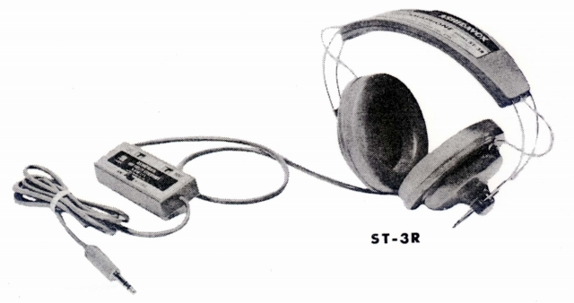
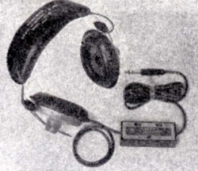
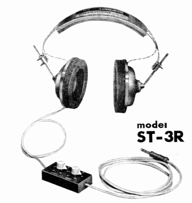
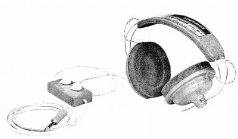

ST-3R


■価格 4,600円
■型式 ダイナミック型
■振動板
■インピーダンス 8Ω
■再生周波数帯域 20-17,000Hz
■許容入力 500mW
■感度
■コード 2.5ｍ
■重量 390g
■発売 〜1962年頃
■販売終了
1974年頃？
■備考 価格は1973年頃のもの
モノ/ステレオ切替、音量調節付き
価格は判明しないが、管理人が入手した最古の資料は1962年1月
の「無線と実験」誌掲載の広告であり、1961年発売の可能性もある。
なお1960年代初期型は 再生周波数帯域 25-17,000Hzの仕様だった

1962年の最初期型。コントロールボックス及びヘッドバンドが後年のものと異なる。

1963年型。ヘッドバンドが後年のものと同じようなタイプに変更されている。